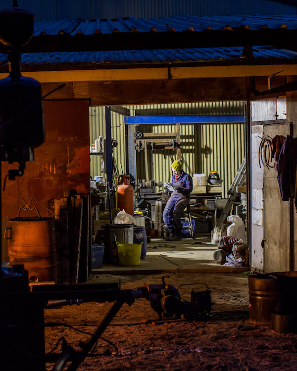

Curator, Art Historian and PhD candidate at Coventry University, Jennifer Dudley will be the curatorial writer for the second winter project. She will explore women’s sculptural practices in Britain - which have generally been written from the perspective and prejudice of a patriarchal canon of art - to recognise the ongoing contribution of women to an ever-expanding field. She is also the part time Education and Engagement Curator at NN Contemporary Art, Northampton and has previously held curatorial roles at National Museum Wales, Cardiff and Edgar Modern Fine Art, Bath. She gained her BA in History of Art from University of Bristol in 2013 and an MA in Curating from University of the West of England in 2016.
Participants

Curator Elisa Kay is recognised for her work within many established organisations. She was Curator at Spike Island, Director/Curator at Flat Time House, Curator for How to Work Together and is a founder of BEEF, Bristol. Kay is currently a Project Curator at Somerset House. Elisa Kay has contributed to many published texts including A World View: John Latham. She has a History of Art degree and a Masters in Curatorial Practice from Goldsmiths university. At Spike Island, Kay curated large-scale exhibitions by artists such as Iman Issa and Andrea Luka Zimmerman and projects such as Syllabus and Bristol New Music.

Wilkinson is an artist and writer. She has worked for organisations including, A-N magazine, Visual Arts South West as Editor, Spike Island, MAYK, Arnolfini and University of the West of England. As an artist she has exhibited nationally and internationally, and as a writer commissions include Bristol Museum and Art Gallery, East Bristol Contemporary, FACT Liverpool, Bristol City Council and Printmaking Today.

Bowman lives and works in Bristol and graduated with BA (Hons) in Fine Art from UWE in 2013. She has been selected for Outpost Residency 2018 and Package Residency 2016 and won Emerging Artist Award, at Plymouth Contemporary Open 2015. Solo exhibitions include: All Round-er (sad sale), Spike Island, Bristol (2018); putting my foot down, Outpost, Norwich (2018); Selected exhibitions include: Exeter Contemporary Open (2019), OUTPOST MEMBERS show selected by Jessica Warboys (2019), Go friday, come back Sunday, part of Open Studios at Spike Island, Bristol (2017); EBC003, East Bristol Contemporary, Bristol (2016); Mates Rates, The Orchard Inn, Bristol (2016); Spar Dash; Wear Dark Glasses, The Island, Bristol (2016); Plymouth Contemporary Open, Plymouth College of Art, Plymouth (2016). Publications include All Round-er (sad sale) 2018 and ‘it’s a must’, 2015.

Lathwood makes sculptures and large-scale installations which regularly respond to a particular site, event, material or process.Her portfolio varies greatly in form, scale, context and method of production, encompassing: temporary and permanent public art, exhibitions curated for galleries and heritage sites (often as the outcome of an artist residency) and studio-based work. Past activities include: Getting There, solo exhibition at Fabrica, Brighton UK (2018); Curious Formations, Trust New Art commission at Biddulph Grange, Stoke on Trent, UK (2017); Is it magma?, solo exhibition at Earth Gallery, University of Bristol, UK (2016); A Solid Above, Dual exhibition with Solveig Settemsdal at Hardwick Gallery, University of Gloucester, UK (2016); resident artist at Hestercombe Gallery and Gardens, Somerset, UK (2015). Lathwood was co-director of Ore and Ingot, an artist-led fine art bronze foundry in Bristol (2012 - 2019). Lathwood’s studio is based at Spike Island gallery, Bristol.

Solveig Settemsdal lives and works in London. She is a graduate of Sculpture at the Slade School of Fine Art (2018) and studied BA Fine Art Painting and Printmaking at Glasgow School of Art (2007-2010). Settemsdal’s practice moves through the mediums of sculpture, drawing, video, sound and photography. She is fascinated by the mutability of object and medium, and our indescribable and often impossible relationship to our environment. Select exhibitions include Entangle, Bildmuseet, Umeå, Sweden (2018) AI: Das Andere Ich, Ars Electronica, Linz, Austria (2017) Sonica at CCA, Glasgow (2017) Drawing Biennial at Drawing Room, London (2017) Høstutstillingen, Statens Kunstforening, Oslo, Norway (2014) Conversation Pieces, Spike Island, Bristol (2015) Shadow Optics, Lubomirov/Angus-Hughes Gallery, London (2016) A Solid Above, Hardwick Gallery, Cheltenham (2016). She was awarded first place in the Jerwood Drawing Prize for her video work Singularity (2016).

Olivia Jones (b. London, 1988) is a visual artist based at Spike Island and a member of Spike Print Studios. Working across varied media her work explores the structural behaviour of landscapes in an endeavour to reveal unseen dimensions and develop the constructs for evolving narratives. Jones graduated with BA (Hons) Fine Art at Falmouth University (2013). She has shown her work in galleries across the UK and internationally. Projects include: Artist in Residence, School of Earth Sciences, University of Bristol (2018-19); Tephra: Order in the Dust, Test Space, Bristol (2018); Artist in Residence, Ashlantic, Fur Island, Denmark (2017); Contemporary British Drawing, Xi’an Academy of Fine Arts, China (2015); You Move Me, Antlers Gallery, Create Centre, Bristol (2015); Jerwood Drawing Prize, Jerwood Space, London (2013).
Abigail Reynolds lives in St Just, Cornwall, and has a studio at Porthmeor in St Ives. She studied English Literature at St Catherine's College Oxford University. Her interest in books & libraries prompts her collages and sculpture which are often composed of found photographs spliced to create fresh narratives. In March 2016 she was awarded the BMW Art Journey prize at Art Basel, to travel to lost libraries along the Silk Road. A book documenting this journey has been published by Hatje Cantz. She has work in the Government Art Collection, Yale University Art Gallery, New York Public Library and many private collections.

Duffin (lives and works in Bristol) is a visual artist whose works are predominantly sculptural in nature. She employs a process of speculative questioning that draws influence from varied disparate ideas and anecdotes within anthropology, literature, metaphysics and scientific history. She is interested in things that have a sense of self conscious autonomy and the potential to be generative agents. Eleanor has exhibited both in her home country of Ireland and internationally, including; 2116:Forecast for the Future, Eli and Edythe Broad Art Museum, Michigan State University (2016), Foaming at the Mouth, Dublin (2016), The Wild, Project Arts Centre, Dublin (2016) Forms of Duality curated by Mary Cremin for Solstice Gallery, Navan (2016). Eleanor has participated in international residency programs including; Bemis Center for Contemporary Arts, Omaha, US (2017) Gertrude Contemporary, Melbourne, Australia (2013-16), Fire Station Artists Studios, Dublin, Ireland (2010-13), SIM, Reykjavík, Iceland,(2009-11). She has received a number of awards and support from Irish cultural bodies including the Arts Council of Ireland, Culture Ireland Award and Dublin City Council Arts Department. After graduating from Limerick School of Art and Design with a BA in Sculpture and Combined Media in 2003, she completed an MA at the National College of Art and Design, Dublin. In 2015 she completed MRes program at St Lucas University College of Art and Design, Antwerp.

Jane Faram is Communications Manager (5 years) at Spike Island, Bristol, an international centre for the development of contemporary art and design. She leads on the charitable organisations' audience development, from planning and delivering all communications and marketing materials to devising engagement strategies for its artistic programme. Her wealth of experience is gathered over twelve years working closely with emerging and established artists and the public, as part of dynamic creative teams including: Site Gallery, Sheffield; Doc/Fest, Sheffield; Neon Workshops, Wakefield; Vincent Dance Theatre, Sheffield. She has also written extensively on the visual arts, theatre and urbanism for publications including Article Magazine, Our Favourite Places and Corridor 8.